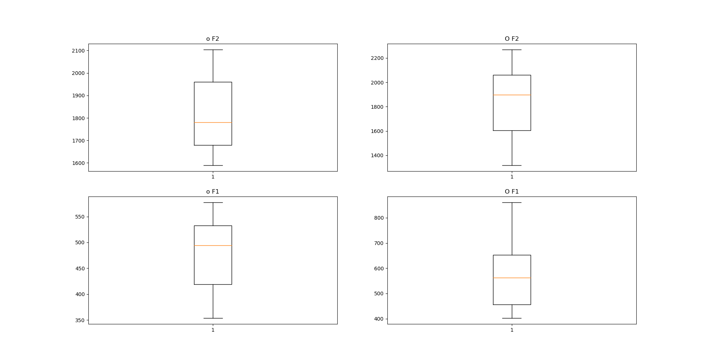

Individuare un Merger Vocalico
Table of Contents
Merger e split sono due dei vari possibili cambiamenti fonologici che una lingua può attraversare. Grazie ad analisi acustiche accurate e con abbastanza dati a disposizione, è possibile ottere in modo scientifico una risposta su un possibile merger o split di vocali. Per poter fare ciò, basta sottoporre le formanti ottenute ad un t-test.
Acquisire i dati
Che siano raccolti tramite parlato spontaneo, letture di testi o di liste di parole, i dati fonetici raccolti nel caso dell'analisi di un merger devono essere ben organizzati e ogni fono deve ricevere una rappresentazione IPA che corrisponda alla documentazione corrente della lingua. Ciò vuol dire che, quando l'audio viene taggato, bisognerebbe attribuire i caratteri IPA alle vocali sotto osservazione corrispondenti alle grammatiche più recenti. Questo permetterà in seguito di esaminare facilmente la situazione e decidere se un merger è effettivamente presente, in formazione o assente.
Il t-test
Il t-test viene effettuato quando la deviazione standard di una popolazione non è conosciuta o quando la grandezza della popolazione è inferiore a 30.
Analisi di un singolo parlante
Nel caso si decidesse di effettuare il t-test sui dati di un solo parlante, è possibile evitare di normalizzare i valori delle formanti e vedere direttamente se nel singolo parlante esiste una differenziazione fra due vocali o meno. Usando un dataframe con colonne contenenti formanti F1 ed F2 e classificatori come il tipo di vocali o il parlante a cui i valori appartengono, basta dividere in serie distinte i valori F1 e F2 in funzione della vocale a cui dovrebbe (in teoria) essere appartenente.
from scipy.stats import ttest_ind group1 = [x for x in vowelsform['F2'][vowelsform['vowel_id'] == 'e']] group2 = [x for x in vowelsform['F2'][vowelsform['vowel_id'] == 'E']] group3 = [x for x in vowelsform['F1'][vowelsform['vowel_id'] == 'e']] group4 = [x for x in vowelsform['F1'][vowelsform['vowel_id'] == 'E']]
Create le variabili, sottoporre i valori al t-test è semplice:
# t-test tra i valori F1 delle due vocali test1 = ttest_ind(group1, group2, equal_var=False) # t-test tra i valori F2 delle due vocali test2 = ttest_ind(group3, group4, equal_var=False) # equal_var come falso non da per scontata la varianza della popolazione # e condurrà un Welch's t-test che è più adatto su popolazioni di dimensioni diverse
Nel mio caso il risultato è stato:
Ttest_indResult(statistic=-0.98054005761205953, pvalue=0.32963531208778507)
Ttest_indResult(statistic=-3.8307106549337315, pvalue=0.00024559411145755528)
Dal risultato si vede che un merger è probabile ma di certo non completo se presente, dato che i valori di F2 sono abbastanza simili ed il risultato del t-test conferma la null-hypothesis e che quindi non ci sono differenze significative tra le due serie, ma d'altro canto, la differenza fra i valori di F1 è significativa e quindi i valori non sono simili. Ciò suggerisce che il merger sia promimente frontalizzazione delle due vocali piuttosto che nella loro altezza.
Sottoponendo i fonemi /ɔ/ e /o/ allo stesso test il risultato è stato questa volta più chiaro.
Ttest_indResult(statistic=7.8149169122090942, pvalue=6.2840375947004971e-12)
Ttest_indResult(statistic=-4.8876875923173388, pvalue=3.9858781331384353e-06)
In questo caso la presenza di un merger completo è chiara e i due fonemi che dovrebbero essere prodotti sono in realtà lo stesso fono. Il p-value è ben distante da 0.05 e i valori di F1 ed F2 non differescono in maniera significativa.
Un modo per avere una rappresentazione visiva del confronto che avviene con il t-test è usare dei boxplot:
fig = plt.figure() plt.subplot(221) plt.boxplot(group1) plt.title('o F2') plt.subplot(222) plt.boxplot(group2) plt.title('O F2') plt.subplot(223) plt.boxplot(group3) plt.title('o F1') plt.subplot(224) plt.boxplot(group4) plt.title('O F1')

Normalizzazione per gruppo di parlanti
Per un gruppo di parlanti il procedimento è identico, l'unica differenza è che bisognerà prima normalizzare i dati come meglio si considera. Una volta normalizzati i dati non ci sarà bisogno di alcuna distinzione fra i parlanti.